-

MARIO 언제나 밝고 활기찬 마리오. 피치공주를 좋아하며 쌍둥이 동생 루이지와는 명콤비. 운동신경이 좋아 테니스나 축구 그리고 카트 레이스까지 못하는 것이 없습니다.
-
LUIGIS 마리오의 쌍둥이 동생. 겁이 많지만 상냥한 성격. 싫어하는 것은 역시나 유령. 사실 마리오와 비견될 정도로 무엇이든 잘하는 실력의 소유자입니다.
-
PRINCESS PEACH 버섯 왕국의 공주님. 너무나도 상냥하여 모든 이들이 행복하게 지내기를 항상 기도합니다.
-
KINOPIO 피치공주의 곁에서 일하는 버섯 왕국의 주민 파랑이나 초록 등 다른 색의 동료도 있으며 모두 아주 활기찬 일꾼들입니다.
-
KOOPA 세계 평화를 어지럽히는 거북족의 대마왕이며 마리오와 친구들의 영원한 숙적. 엉금엉금, 굼바, 킬러, 헤이호 등 여러 수하들을 거느리며 버섯 왕국을 위협하고 있지만 매번 마리오와 친구들에 의해 저지되어 실패합니다.
-
YOSHI 「요시 아일랜드」에서 온 마리오의 의지할 수 있는 동료. 상냥하고 느긋한 성격. 자랑하는 긴 혀로 과일이나 적캐릭터를 통째로 삼켜 알로 만들어 버립니다.
-
PRINCESS DAISY 사라사랜드의 공주님. 노랑색 드레스와 꽃 모양 악세사리가 트레이드 마크. 밝고 건강하며 다소 말광량이 같은 부분도 있습니다.
-
DONKEYKONG DK마크가 들어간 빨간색 넥타이가 트레이드 마크인 정글의 왕자. 거대한 나무 통을 가볍게 내던져서 지면을 흔들리게 할 정도의 괴력의 소유자입니다.
-
BOO 어두운 곳에 자주 출몰하는 장난꾸러기 유령. 유령이지만 엄청난 부끄럼쟁이이기 때문에 눈이 마주치면 부끄러워서 움직이지 못하게 됩니다.
-
WARIO 자칭 마리오의 소꿉친구이나 최대의 라이벌. 노랑색 모자에 보라색 작업복, 트레이드 마크인 톱니모양의 수염. 호쾌하고 사소한 것은 신경쓰지 않는 성격.
 

빨간 모자에 파란 작업복, 트레이드 마크인 콧수염.
언제나 밝고 활기찬 마리오!
달리고, 뛰고, 슈퍼버섯으로 파워 업.
다양한 액션과 아이템을 사용하며
세계 각지로 모험을 떠납니다.
골프나 테니스를 비롯한 스포츠도 잘하고,
화려한 드라이빙 테크닉을 뽐내기도 합니다.